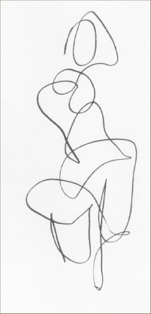
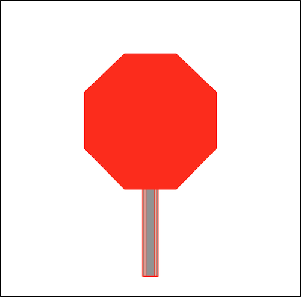

Images, Power, and Politics
Part 2
September 4, 2018
Keywords Review

- Culture
- Representation
- Mimesis vs. Construction
- vs. Simulation
- Intertextuality
- Indeterminacy
- Polysemy
Ekphrasis
An Exercise in Ekphrasis
The meaning of an image is:
- contextual
- polysemic
- contested
Semiotics
Ferdinand de Saussure
20th Century French Linguist
The Signifier (Sr)
- The physical form of the sign.
- pencil marks
- vocal sounds
- pixels on a screen
- The part of the sign that we perceive with our senses.
SNOW

The Signified (Sd)
- The Signified is not the REFERENT (the “Thing Itself”)
- Instead, the signified is the thought, concept, or mental image we may have of the referent.
- The signified is attached to or “conjured up” by the signifier.
Tattoos and Semiotics
We can call physical marks by the name “signifier” only when and if they conjure a signified to form a sign.
If they don’t, then they are NOT signifiers.

Is this a signifier?
It is if it conjures a mental concept (signified), such as:- A map to my apartment.
- A woman reclining on a chair
A Quick Game of
PICTIONARY©
Pictionary is the joint struggle to create a sign, such that the marks you make on the page become a signifier that “conjures up” the appropriate signified in the mind of your partner.
You may just end up making marks on the page that never become signifiers…
e.g. WHAT THE *&%!!# ARE YOU DRAWING??!!??
Signs are:
- Abstract
- Arbitrary and Conventional
- Ambiguous
Signs are NOT the concrete things that they represent…
There is no necessary relationship between the signifier and the signified.
- For example, there is no reason why we use “d” “o” “g” to refer to that cute fuzzy thing that’s yapping at the door.
- Instead, we use “dog” because of our CONVENTIONS…
Charles Sanders Peirce developed a schema for understanding the different ways a sign can relate to its referent, asking:
How MOTIVATED is the sign by the ‘thing itself’?
Degrees of Motivation
(A continuum)
- Symbol
- Icon
- Index
Symbol
- LOW Degree of Motivation
- The relationship between the sign and its referent is completely ARBITRARY or based on SOCIAL CONVENTION.

Icon
- MODERATE Degree of Motivation
- A sign which RESEMBLES or LOOKS LIKE its referent.
Index
- HIGH Degree of Motivation
- A sign that is PHYSICALLY PRODUCED by its referent.
- Examples:
- Smoke is an index of fire
- Sneezing is an index of a cold
- A fingerprint is an index of a thief
What about a photograph?
Like this image of Saussure?
For next class:
Read: Selections from Barthes’ Camera Lucida
As you encounter the images in the assigned NYT article, note an image or two that engage your understanding of Barthes’ concepts of studium and punctum.